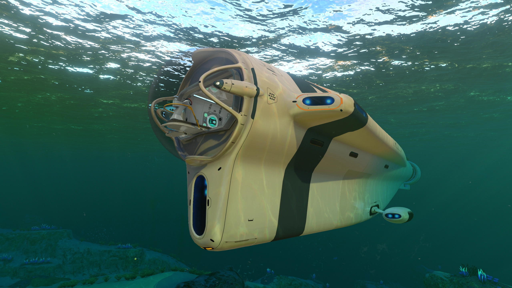
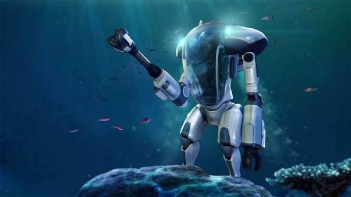
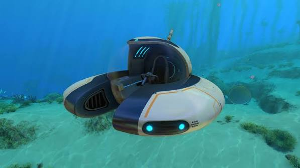
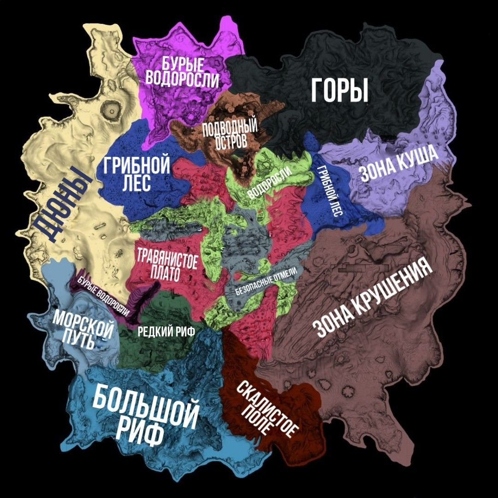
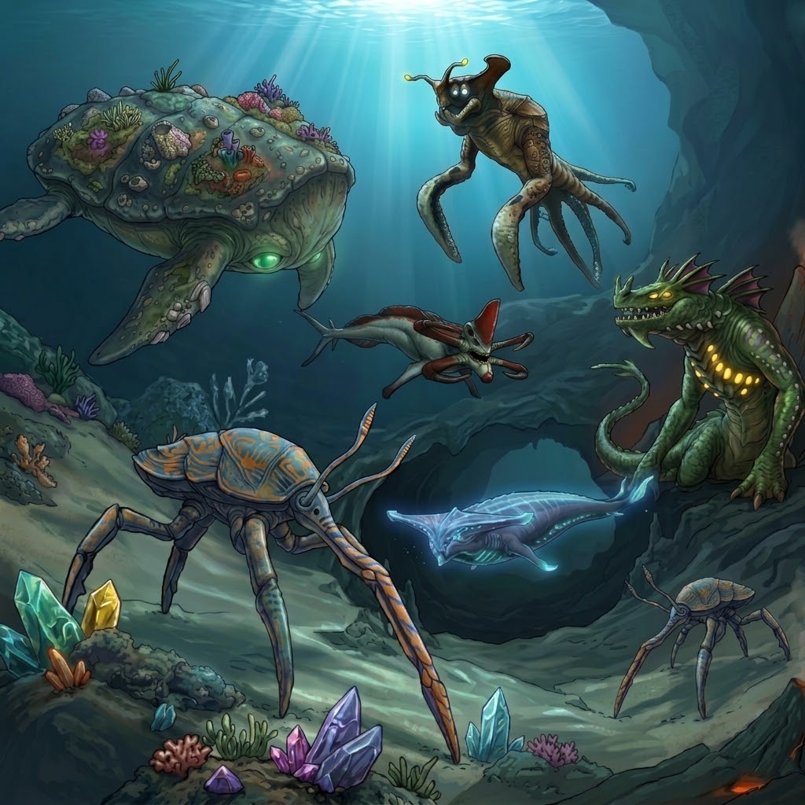
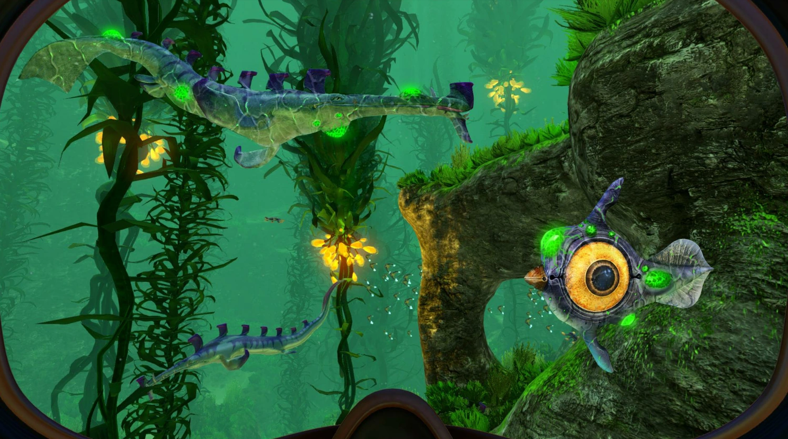

Транспорт
Циклоп

Величезний підводний човен, який слугує пересувною базою та захищає від глибинного тиску.
Краб

Міцний екзоскелет для дослідження небезпечних біомів і видобутку великих покладів ресурсів.
Метелик

Швидкісний та маневрений одномісний батискаф для швидкого пересування на невеликих глибинах.
Біоми планети 4546B
Планета 4546B складається з різноманітних підводних екосистем. Нижче наведено повний класифікатор біомів та зон із даними сканування КПК:

- БЕЗПЕЧНА ВІДМЕЛЬ (SAFE SHALLOWS) - початкова зона зі стабільним кліматом, рясною кількістю дрібної риби, коралів та поживними речовинами для виживання.
- ЛІС ВОДОРОСЛЕЙ (KELP FOREST) - густі зарості високих волокнистих водоростей, де мешкають небезпечні Сталкери та збираються корисні ресурси.
- ТРАВЯНЕ ПЛАТО (GRASSY PLATEAUS) - відкрита червона рівнина з напівпрозорими кораловими стовпами та активною фауною.
- АВРОРА І ЗОНА КРУШЕННЯ (AURORA & CRASH ZONE) - місце аварії космічного корабля. Район заражений радіацією та містить цінні обломки.
- ГРИБНИЙ ЛЕС (MUSHROOM FOREST) - тихий біом із велетенськими міцелієвими деревами, багатий на літій та кварц.
- ЗОНА ДЮН (DUNES) - широкі піщані рівнини на околицях карти з високою концентрацією агресивних Левіафанів-Жнців.
- ПІДВОДНІ ОСТРОВИ (UNDERWATER ISLANDS) - плаваючі острівні масиви, що утримуються гравітаційними аномаліями.
- РАЗРЕЖЕННИЙ РИФ (SPARSE REEF) - спокійний, дещо пустельний напівглибоководний регіон із поодинокими скелями.
- БОЛЬШОЙ РИФ (GRAND REEF) - глибоководний біом, що світиться в темряві завдяки величезним синім сферичним кулям.
- ПУТЬ МОРСКИХ СТРАЙДЕРОВ (SEA TREADERS' PATH) - місце міграції велетенських травоїдних істот, які залишають на дні цінні ресурси.
- ГОРЫ (MOUNTAINS) - скелясті круті схили, де знаходяться значні запаси магнетиту та бази входів до інопланетних споруд.
- ДЮНИ (DUNES) - додатковий сектор пустельних глибин із підвищеним рівнем сейсмічної активності.
- КРОВАВІ ВОДОРОСЛІ (BLOOD KELP ZONE) - мрачний і моторошний біом із червоними напівпрозорими лозами та хижаками.
- ПОЛЕ ОБЛОМКІВ (CRASH ZONE TRENCHES) - глибокі траншеї поруч із місцем аварії «Аврори».
- МЕРТВА ЗОНА (DEAD ZONE / CRATER EDGE) - край ігрової карти, де мешкають Примарні левіафани.
- БЕЗДНА (VOID) - глибоководні бездонні ділянки за межами основного шельфу планети.
- ПОЛЕ ОБЛОМКІВ (CRASH ZONE TRENCHES) - глибокі траншеї поруч із місцем аварії «Аврори».
- МЕРТВА ЗОНА (DEAD ZONE / CRATER EDGE) - край ігрової карти, де мешкають Примарні левіафани.
- БЕЗДНА (VOID) - глибоководні бездонні ділянки за межами основного шельфу планети.
- ЗАТЕРЯНА РІЧКА (LOST RIVER) - підземна річка з токсичним зеленим розсолом та скелетами стародавніх істот.
- НЕАКТИВНА ЛАВОВА ЗОНА (INACTIVE LAVA ZONE) - гарячий підземний регіон із покладами кіаніту.
- АКТИВНА ЛАВОВА ЗОНА (ACTIVE LAVA ZONE) - найглибша дослідна зона планети з річками розпеченої магми.
- ПЕРВИННА ДОСЛІДНА ЛАБОРАТОРІЯ (PRIMARY CONTAINMENT FACILITY) - головний комп
Примітка КПК: Рекомендується використовувати транспорт «Циклоп» або екзоскелет «Краб» для занурення в зони нижче 500 метрів.
Левіафани планети 4546B

БЕЗПЕЧНІ ЛЕВІАФАНИ
- РИФОСПИН (REEFBACK LEVIATHAN) - мирні гіганти, що повільно плавають біля поверхні. На їхніх спинах утворюються цілі екосистеми з рослин та ресурсів.
- МОРСЬКИЙ СТРАЙДЕР (SEA TREADER) - триногі велетні, які крокують дном океану та піднімають цінні поклади руди.
- МОРСЬКИЙ ІМПЕРАТОР (SEA EMPEROR) - найстаріша та найрозумніша істота планети, яка живиться мікроорганізмами та є повністю дружньою.
НЕБЕСПЕЧНІ ЛЕВІАФАНИ
- ЖНЕЦЬ (REAPER LEVIATHAN) - агресивний хижак із потужними жвалами біля пащі. Здатен захоплювати та ламати батискафи.
- ПРИМАРНИЙ ЛЕВІАФАН (GHOST LEVIATHAN) - напівпрозора біолюмінесцентна істота, що охороняє межі карти та глибокі каньйони.
- МОРСЬКИЙ ДРАКОН (SEA DRAGON) - велетенський підземний хижак, що мешкає в лавових зонах і здатен вивергати розпечену магму.
Корисні ресурси планети 4546B
- ТИТАН (TITANIUM) - базовий конструкційний метал, необхідний для виготовлення більшості інструментів, модулів баз та транспорту.
- МІДЬ (COPPER) - основний провідник, який використовується для створення електроніки, батарейок та мідного дроту.
- СЕРЕБРО (SILVER) - цінний метал для виробництва високотехнологічних компонентів, мікросхем та комплектів занурення.
- ЗОЛОТО (GOLD) - шляхетний метал із високою провідністю, необхідний для комп'ютерних чіпів та сканерів.
- СВИНЕЦЬ (LEAD) - важкий щільний метал, що застосовується для противаг, протирадіаційних костюмів та обшивки реакторів.
- ЛІТІЙ (LITHIUM) - легкий і міцний метал для виготовлення ультраміцних пласталевих злитків та зміцнення стін баз.
- НІКЕЛЬ (NICKEL ORE) - глибоководна руда, необхідна для виготовлення занурювальних модулів транспорту другого рівня.
- МАГНЕТИТ (MAGNETITE) - залізовмісний мінерал із магнітними властивостями для складних сканерів та термогенераторів.
- МЕТАЛОБРУХТ (METAL SALVAGE) - уламки обшивки корабля «Аврора», які можна переробити у високоефективні злитки титану.
- КВАРЦ (QUARTZ) - напівпрозорий мінерал, що плавиться у скло та силікон для ілюмінаторів і кабін транспорту.
- СОЛЬ (SALT DEPOSIT) - природний хімічний з'єднувач для консервації їжі та виготовлення антисептичного засобів і знезаражувальних таблеток.
- АЛМАЗ (DIAMOND) - найтвердіший кристал для створення ріжучих інструментів, лазерного різака та зміцнювальних насадок.
- РУБІН (RUBY) - термостійкий дорогоцінний камінь, необхідний для виготовлення теплових модифікаторів та екзоскелета «Краб».
- КІАНІТ (KYANITE) - рідкісний блакитний кристал із лавових зон для створення найглибших занурювальних модулів і силових осередків.
- СЕРА (CRYSTALLINE SULFUR) - кристалічна серка з токсичних підземних річок, необхідна для створення ракетних двигунів і костюма «РАК».
- ПЕЧЕРНА СЕРА (CAVE SULFUR) - вибухонебезпечна речовина, яку видобувають із гнізд агресивних риб-Камікадзе для виготовлення ремонтних інструментів.
- НАСТУРАН (URANINITE) - радіоактивна уранова руда, яка слугує паливом для атомних реакторів підводних баз.
- ІОННИЙ КУБ (ION CUBE) - високоенергетичне джерело живлення стародавньої раси Предків із велетенським запасом енергії.
- КИСЛОТНИЙ ГРИБ (ACID MUSHROOM) - поширений органічний компонент, із якого видобувають кислоту для виготовлення перших батарейок.
- ГЛИБИННИЙ ГРИБ (DEEP MUSHROOM) - біолюмінесцентний організм із глибоких біомів для синтезу полібензолу та полімерів.
- КОРАЛОВА ТРУБА (CORAL TUBE SAMPLE) - зразок вапнякової структури великих трубчастих коралів для очищення води та виробництва антисептиків.
- ПЛАСТИНЧАТИЙ КОРАЛ (TABLE CORAL SAMPLE) - шматочки пласких коралових пластин, що входять до складу комп'ютерних мікросхем.
- ВОДОРОСЛІ (CREEPVINE / SEED CLUSTER) - водорості та їхні світні грона для створення силіконової гуми, мастила й волокнистої тканини.
- ГЕЛІЄВИЙ МЕШОЧЕК (GEL SACK) - рідкісна м'якуш із пористою структурою для виготовлення аерогелю та теплозахисних елементів.
- МАСЛЯНИЙ СОК (BLOOD OIL) - масляниста рідина з червоних лоз для виробництва бензолу та надміцних синтетичних матеріалів.
- ЗУБ СТАЛКЕРА (STALKER TOOTH) - міцна емалева структура, яку Сталкери гублять при грі з металобрухтом, необхідна для виготовлення пулеподібного скла (Enameled Glass).
- ГАЗОВИЙ ФОЛЛІКУЛ (GAS POD) - отруйна капсула, яку скидають Газобрюхи; використовується для створення отруйних торпед та засобів захисту.
Загроза зараження (Глобальний вірус)
Сканування зразків живої тканини виявило наявність невідомого патогена. Нижче наведено дані КПК про вірус Хаара:

- Статус сканування КПК: УВАГА! У організмі суб'єкта виявлено сліди невідомої інопланетної бактерії (Хаара).
- Симптоми: Поступовий розвиток інфекції, поява зелених утворень на шкірі та загальне погіршення біологічних показників.
- Протокол безпеки: Необхідно знайти Первинну дослідну лабораторію та отримати фермент 42 від Морського Імператора для повного лікування.